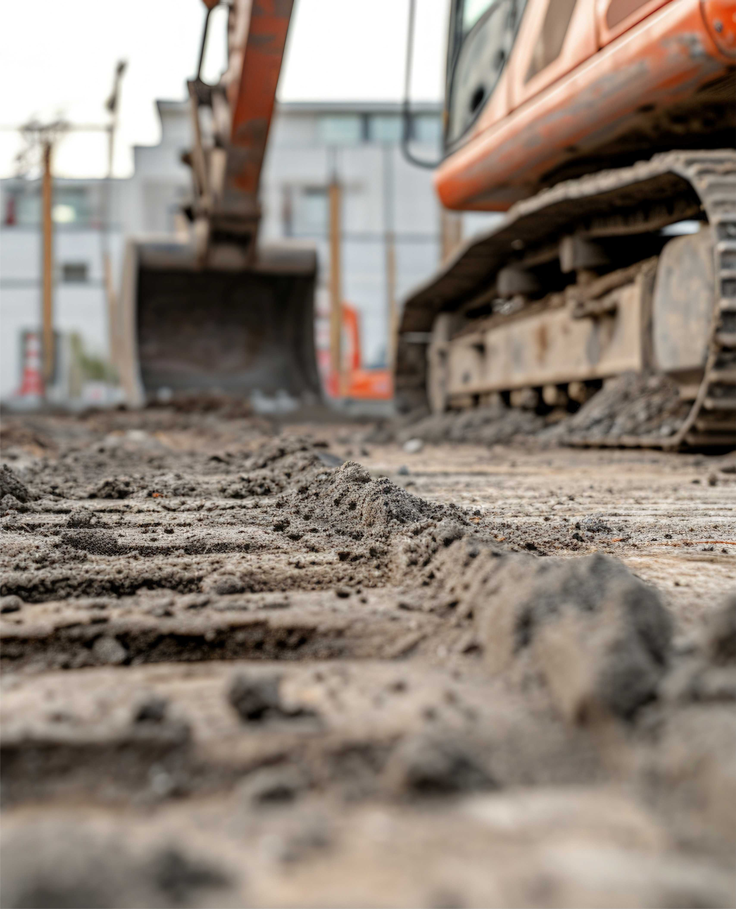
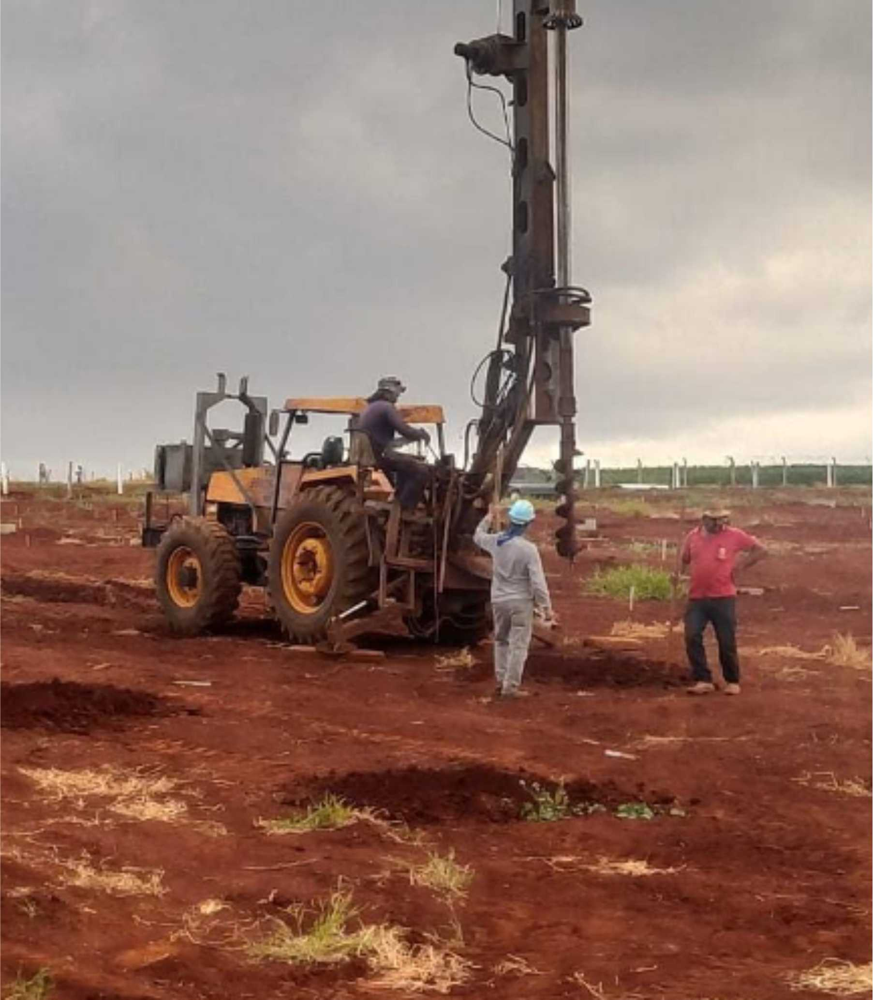
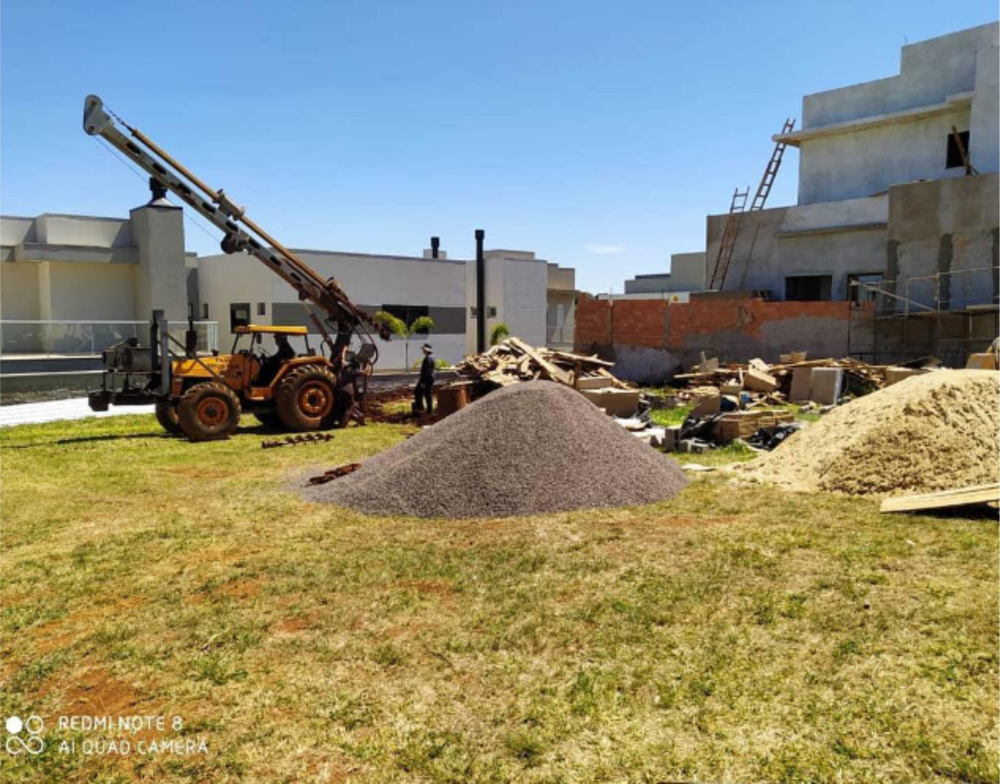
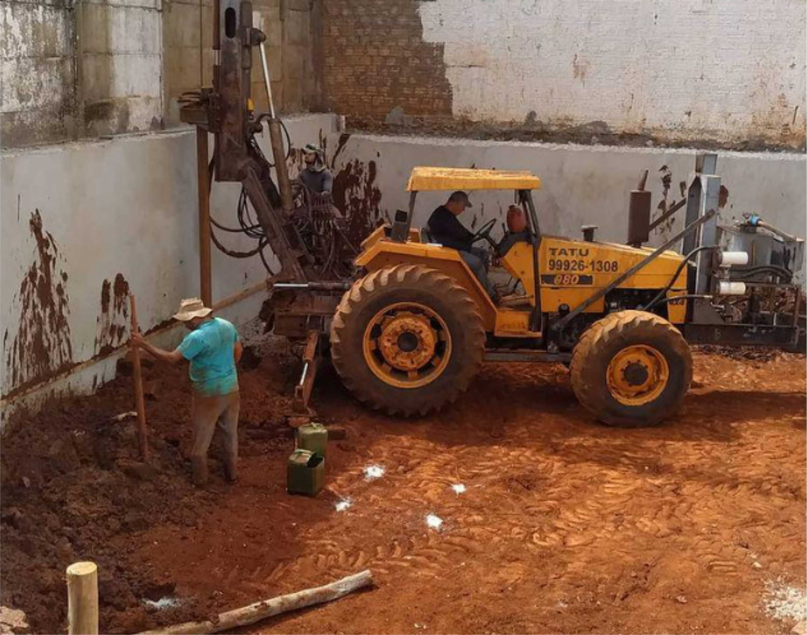
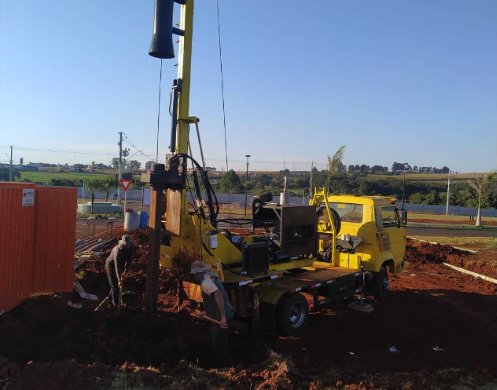

Estacas escavadas
Execução de estacas escavadas com profundidade de até 14 metros, conforme necessidade do projeto.
Tatu Fundações • Cascavel/PR
Equipe especializada, maquinário profissional e atendimento direto para obras residenciais, comerciais e industriais.
Quem somos
A Tatu Fundações atua no mercado desde 2010, com base em Cascavel/PR, oferecendo estrutura técnica, maquinário profissional e execução responsável para diferentes tipos de obra.
Nossa missão é superar expectativas com atendimento próximo, avaliação de custo-benefício e produtividade em campo.

Atendimento rápido
Fale agora com a Tatu Fundações e receba um atendimento direto pelo WhatsApp.
Serviços
Apresentação clara dos serviços com foco no que o cliente quer saber: o que vocês fazem, como trabalham e qual o benefício na prática.
Execução de estacas escavadas com profundidade de até 14 metros, conforme necessidade do projeto.
Perfuração com brocas de diferentes diâmetros para atender obras com requisitos variados.
Avaliação da obra com foco em custo-benefício, produtividade e melhor caminho para execução.
Como funciona
Projetos
Galeria visual para reforçar experiência, estrutura e credibilidade da operação.




Prova social
“Top de mais o serviços, agilidade e comprometimento com a obra.”
Raphael CorreiaEmpresa avaliada com nota 5,0 no Google, reforçando a percepção de confiança e qualidade no atendimento.
Tatu FundaçõesPreencha os dados abaixo ou clique no botão para falar direto no WhatsApp.
Contato
Atendimento em Cascavel/PR e região para obras que precisam de execução técnica, rápida e confiável.
Este formulário monta a mensagem e abre o WhatsApp automaticamente.